New in respR v2.0 is the ability for
adjust_rate() to perform dynamic and other types of
adjustments to calculated rates.
After calculating background rates from a control or “blank”
experiment, the function can adjust rates from calc_rate,
calc_rate.int, auto_rate,
auto_rate.int, or numeric values in the following ways:
By a single value
By a mean of multiple values
By a rate determined from an equivalent window in a concurrently-run control
By a dynamic rate which changes over the course of an experiment
In addition, there are several variations on these adjustment methods.
We use the interlinked respR functions of
inspect, calc_rate, calc_rate.bg
etc. in the following examples, but for most data frames or numeric
values can also be used. We’ll show some examples of these below.
respR analyses are largely unitless; units are only
required when the rates come to be converted in
convert_rate(). However, note that the raw background data
should be in the same units of time and oxygen as the raw data
used to calculate the rate being adjusted. The background recording
should also be conducted using the same equipment and under the same
conditions as the experiment to be adjusted, or as close as is
practically possible. This includes using the same or identical
respirometry chambers; in our experience the vast majority of background
oxygen use comes from bacterial growth on the internal surfaces of the
respirometer, not from organisms in the water.
Note that in general the background recording does not have to be conducted at the same time as experiments, or even over the same duration as the experimental chambers to be adjusted. While this is ideal practice, it’s not always practical. Their purpose is to establish the general relationship of background oxygen change per unit time which can then be applied to specimen experiments of any length.
In the respR workflow, adjust_rate should
be used on rates which have been determined in calc_rate,
calc_rate.int, auto_rate, or
auto_rate.int or rate values (change in oxygen units per
unit time) otherwise determined from the raw data, but before they are
converted in convert_rate.
However, adjustment of rates is an optional step. While it is extremely important to determine and quantify background oxygen use or production, many respirometry experiments find it to be negligible in comparison to specimen rates because equipment is kept clean and filtered or sterilised water is used, and adjustments are unnecessary (e.g. Burford et al. 2019).
If entering specimen or background rates as values, care should be
taken to enter them with the correct sign. In
respR oxygen uptake rates are negative, as they represent a
negative slope of oxygen against time. Background rates will normally
also be a negative value (though not always). For oxygen production
rates, which are positive, the background rates may be negative or
positive. And there are other cases where background rates may be
positive, such as in open-tank or open-arena respirometry where oxygen
may be added at the water surface.
calc_rate.bg vs. calc_rate for
background rates
For the most part we use calc_rate.bg to determine
background rates in the following examples, which are then passed to
adjust_rate as the by input. However,
calc_rate() can also be used to determine background rates
for use as the by input.
These two functions are similar in functionality but have a couple of key differences.
calc_rate.bg does not have the region selection inputs
that calc_rate does. It calculates the rate across the
whole oxygen~time dataset as entered. However it allows background rates
to be calculated from multiple columns, which is required for several
adjustment methods, and is the default behaviour if a multiple column
dataset is entered. For this reason it also has oxygen and
time column identifiers to specify particular columns,
which calc_rate does not. If the background data needs to
be subset from a larger dataset to a particular region, this is easy to
do using subset_data() before passing it on to
calc_rate.bg.
calc_rate does have region selection inputs, and also
allows you to extract rates from multiple regions of a single
oxygen~time dataset. This is not particularly useful in the context of
background rates, unless you want to average rates from different
regions of the same data for some reason. However, to extract a single
background rate from a particular region of a larger dataset it is an
option and does not require you to subset the data first. It also does
not have oxygen and time column identifiers.
Data should already have been put into the structure of time in column 1
and oxygen in column 2 via processing in inspect(), or if a
data.frame is used already be in this structure. Any other
columns are ignored.
Overall, we find it easier to mentally partition specimen and
background rates by using calc_rate for one and
calc_rate.bg for the other, but it comes down to personal
preference and the specifics of an experiment and what you want to
achieve.
To summarise the differences:
calc_rate.bg - calculate rates from the same
region of single or multiple oxygen columns.
calc_rate - calculate rates from single or
multiple regions of a single oxygen column.
We use the new native |> pipes introduced in R
v4.1 extensively in this vignette to save space and streamline the
code. These can be replaced with dplyr pipes
(%>%) if you have not yet updated. Alternatively, save
the output objects and enter them as the first input of the next
function.
See vignette("flowthrough") for how to adjust
flowthrough respirometry rates.
In this vignette we will run through several hypothetical case studies which should cover most use cases. If there are any we have not, please get in touch and we’ll try to cover them here or build in support in a future update.
“We have a single experiment chamber and have extracted a single rate from it, and we want to adjust it by a background rate from a single blank chamber”
This is the most straightforward adjustment operation. This is for cases where a single blank experiment has been run to determine the background rate of oxygen use or production, and you want to use this rate to adjust one or more specimen rates.
The urchins.rd dataset has recordings of oxygen
consumption from 16 sea urchins, plus two background recordings in
columns 18 and 19. We will adjust a single rate from one urchin
determined via calc_rate using one of these background
chambers.
## inspect and calculate background rate using calc_rate.bg
bg <- inspect(urchins.rd, time = 1, oxygen = 18) |>
calc_rate.bg() 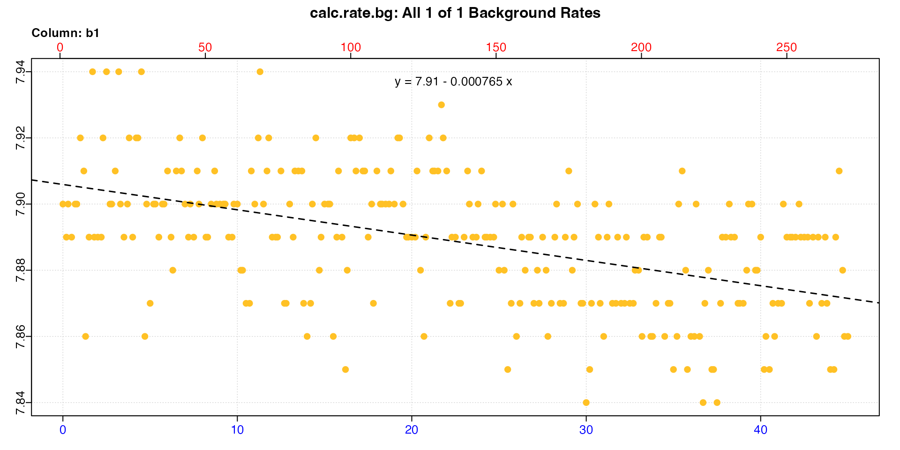
#>
#> # print.inspect # -----------------------
#> time.min b1
#> numeric pass pass
#> Inf/-Inf pass pass
#> NA/NaN pass pass
#> sequential pass -
#> duplicated pass -
#> evenly-spaced WARN -
#>
#> Uneven Time data locations (first 20 shown) in column: time.min
#> [1] 1 2 3 4 5 6 7 8 9 10 11 12 13 14 15 16 17 18 19 20
#> Minimum and Maximum intervals in uneven Time data:
#> [1] 0.1 0.2
#> -----------------------------------------
#>
#> # plot.calc_rate.bg # -------------------
#> plot.calc_rate.bg: Plotting all 1 background rates ...
#> -----------------------------------------
#>
#> # print.calc_rate.bg # ------------------
#> Background rate(s):
#> [1] -0.000765
#> Mean background rate:
#> [1] -0.000765
#> -----------------------------------------Note that using inspect() to prepare data, while we
strongly recommend it (see vignette("inspecting")), is
optional. calc_rate.bg will also accept a
data.frame directly, and has its own column identifier
inputs. This code will perform exactly the same rate calculation.
## inspect and calculate background rate using calc_rate.bg
calc_rate.bg(urchins.rd, time = 1, oxygen = 18)
#>
#> # plot.calc_rate.bg # -------------------
#> plot.calc_rate.bg: Plotting all 1 background rates ...
#> -----------------------------------------
#>
#> # print.calc_rate.bg # ------------------
#> Background rate(s):
#> [1] -0.000765
#> Mean background rate:
#> [1] -0.000765
#> -----------------------------------------Now we calculate the rate of one of the specimens.
## inspect and calculate urchin rate using calc_rate
urch <- inspect(urchins.rd, time = 1, oxygen = 2) |>
calc_rate(from = 10, to = 30, by = "time")#>
#> # plot.calc_rate # ----------------------
#> plot.calc_rate: Plotting rate from position 1 of 1 ...#> -----------------------------------------
#>
#> # print.calc_rate # ---------------------
#> Rank 1 of 1 rates:
#> Rate: -0.0286
#>
#> To see full results use summary().
#> -----------------------------------------Now we have saved both the background rate and the specimen rate we
can go ahead and adjust. The adjust_rate function has a
method input which determines how the by input
is applied. The default for this is "mean", and in this
case with a single value will have the same result. However, there is a
specific "value" method to specify single background
values.
## adjust rate
urch_adj <- adjust_rate(urch, by = bg, method = "value")
print(urch_adj)
#>
#> # print.adjust_rate # -------------------
#> NOTE: Consider the sign of the adjustment value when adjusting the rate.
#>
#> Adjustment was applied using the 'value' method.
#>
#> Rank 1 of 1 adjusted rate(s):
#> Rate : -0.0286
#> Adjustment : -0.000765
#> Adjusted Rate : -0.0278
#>
#> To see full results use summary().
#> -----------------------------------------This same adjustment operation can be conducted by entering numeric inputs, or a mix of objects and numeric inputs. Care should be taken when entering values manually to use the correct sign with the rate. See note above.
## adjust rate
urch_adj <- adjust_rate(-0.0286, by = -0.000765, method = "value")
print(urch_adj)
#>
#> # print.adjust_rate # -------------------
#> NOTE: Consider the sign of the adjustment value when adjusting the rate.
#>
#> Adjustment was applied using the 'value' method.
#>
#> Rank 1 of 1 adjusted rate(s):
#> Rate : -0.0286
#> Adjustment : -0.000765
#> Adjusted Rate : -0.0278
#>
#> To see full results use summary().
#> -----------------------------------------The saved urch_adj object has a
$rate.adjusted element which is the rate that will be
converted when it is passed to convert_rate() for final
conversion to units.
“We have a single experiment chamber and have extracted multiple rates from it, and we want to adjust them by a background rate from a single blank chamber”
The same operation as Case 1 can be performed on
objects containing multiple rates, such as from auto_rate
or where calc_rate has been used to extract multiple rates.
Here we’ll use auto_rate which typically returns several
results. We won’t show the plots this time
## inspect and calculate background rate using calc_rate.bg
bg <- inspect(urchins.rd, time = 1, oxygen = 18) |>
calc_rate.bg()
## inspect and calculate urchin rate using auto_rate and default inputs
urch <- inspect(urchins.rd, time = 1, oxygen = 2) |>
auto_rate()
## adjust rate
urch_adj <- adjust_rate(urch, by = bg, method = "value")
summary(urch_adj)
#>
#> # summary.adjust_rate # -----------------
#>
#> Adjustment was applied using 'value' method.
#> Summary of all rate results:
#>
#> rep rank intercept_b0 slope_b1 rsq density row endrow time endtime oxy endoxy rate adjustment rate.adjusted
#> 1: NA 1 7.84 -0.0293 0.992 240.6 25 165 4.0 27.3 7.71 7.03 -0.0293 -0.000765 -0.0285
#> 2: NA 2 7.74 -0.0253 0.990 184.5 135 268 22.3 44.5 7.18 6.64 -0.0253 -0.000765 -0.0246
#> 3: NA 3 7.86 -0.0324 0.952 15.6 6 54 0.8 8.8 7.82 7.55 -0.0324 -0.000765 -0.0316
#> 4: NA 4 7.86 -0.0319 0.958 14.5 8 60 1.2 9.8 7.84 7.56 -0.0319 -0.000765 -0.0312
#> -----------------------------------------Note how the single $adjustment value has been applied
to each $rate to give a $rate.adjusted. This
is the rate that will be converted when the object is passed to
convert_rate.
Again, this same operation can be performed using values, if a vector of rates is passed.
## adjust rate
urch_adj <- adjust_rate(c(-0.02927, -0.02534, -0.03239, -0.03195),
by = -0.000765,
method = "value")
summary(urch_adj)
#>
#> # summary.adjust_rate # -----------------
#>
#> Adjustment was applied using 'value' method.
#> Summary of all rate results:
#>
#> rank rate adjustment rate.adjusted
#> 1: 1 -0.0293 -0.000765 -0.0285
#> 2: 2 -0.0253 -0.000765 -0.0246
#> 3: 3 -0.0324 -0.000765 -0.0316
#> 4: 4 -0.0319 -0.000765 -0.0312
#> -----------------------------------------Obviously in this case there are no regression coefficients or other data to report.
“We have multiple specimen chambers and a single control chamber”
The same background rate can be used to adjust multiple experimental chambers. All that needs to be done is save the background rate object and use it to adjust as many experimental rates as we want.
Here we save the background rate as above, and also calculate rates
from two of the urchins in the urchins.rd dataset.
## inspect and calculate background rate
bg <- inspect(urchins.rd, time = 1, oxygen = 18) |>
calc_rate.bg()
## inspect and calculate FIRST urchin rate
urch1 <- inspect(urchins.rd, time = 1, oxygen = 2) |>
calc_rate()
## inspect and calculate SECOND urchin rate
urch2 <- inspect(urchins.rd, time = 1, oxygen = 3) |>
calc_rate()Now we can use the bg object to adjust both specimen
rates. As separate objects we have to do this in two operations.
## adjust rate
urch1_adj <- adjust_rate(urch1, by = bg)
urch2_adj <- adjust_rate(urch2, by = bg)#>
#> # print.adjust_rate # -------------------
#> NOTE: Consider the sign of the adjustment value when adjusting the rate.
#>
#> Adjustment was applied using the 'mean' method.
#>
#> Rank 1 of 1 adjusted rate(s):
#> Rate : -0.0278
#> Adjustment : -0.000765
#> Adjusted Rate : -0.0271
#>
#> To see full results use summary().
#> -----------------------------------------
#>
#> # print.adjust_rate # -------------------
#> NOTE: Consider the sign of the adjustment value when adjusting the rate.
#>
#> Adjustment was applied using the 'mean' method.
#>
#> Rank 1 of 1 adjusted rate(s):
#> Rate : -0.0206
#> Adjustment : -0.000765
#> Adjusted Rate : -0.0198
#>
#> To see full results use summary().
#> -----------------------------------------Of course, it is possible to perform this same adjustment for both specimens in one operation by using a vector of values for the two specimen rates.
urch_adj <- adjust_rate(c(-0.0278, -0.0206), by = bg)
summary(urch_adj)
#>
#> # summary.adjust_rate # -----------------
#>
#> Adjustment was applied using 'mean' method.
#> Summary of all rate results:
#>
#> rank rate adjustment rate.adjusted
#> 1: 1 -0.0278 -0.000765 -0.0270
#> 2: 2 -0.0206 -0.000765 -0.0198
#> -----------------------------------------Note, we haven’t specified a method in this example. The
default method is "mean" which averages all the background
rates in by (see next example). With only one background
rate, this will obviously have the same result.
“We run many experiments in parallel and use empty chambers as controls when available. We want to use a mean background adjustment value based on multiple control chambers”
Sometimes multiple background controls are run alongside specimen experiments, or as a block of control experiments in the downtime between specimen experiments. It is also quite common to have multiple chambers set up to run in parallel, and when some are not being used for specimens, rather than have them switched off they are run empty as controls. In these cases we may want to apply the average background rate from several chambers as the adjustment value. This can increase the robustness of background estimations, by averaging out any variations between chambers, although it is always a good idea to examine the control data carefully for consistency.
In the urchins.rd data, there are two control chambers
in columns 18 and 19. We will calculate a mean background rate from
these and use this to adjust a specimen rate. We use the
oxygen column identifier input to select multiple
background columns via regular R syntax.
## inspect and calculate background rate from two chambers
bg <- inspect(urchins.rd, time = 1, oxygen = 18:19) |>
calc_rate.bg()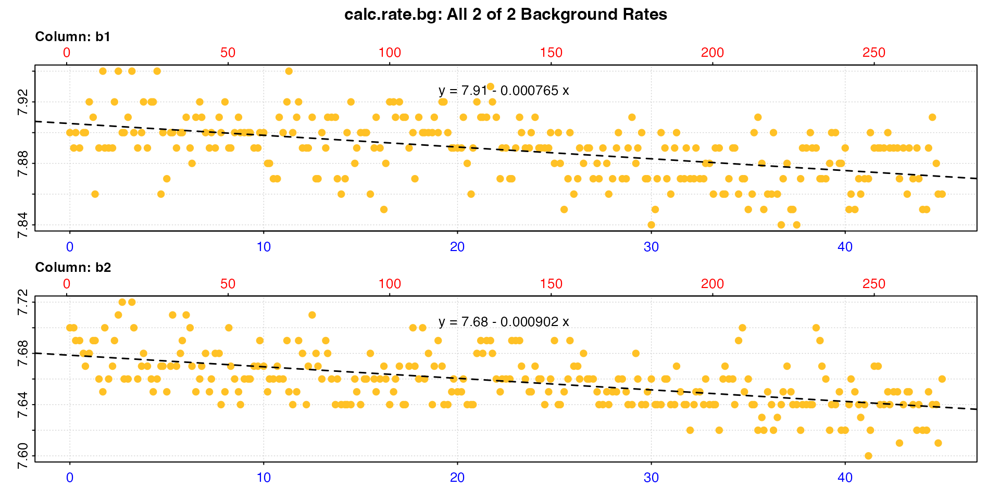
By default, calc_rate.bg will plot all the calculated
background columns (though you can use the pos input to
select which). If we print the result we can see both calculated
background rates, and the mean value.
print(bg)
#>
#> # print.calc_rate.bg # ------------------
#> Background rate(s):
#> [1] -0.000765 -0.000902
#> Mean background rate:
#> [1] -0.000833
#> -----------------------------------------Again, note that using inspect() to prepare data, while
we strongly recommend it (see vignette("inspecting")), is
optional. calc_rate.bg will also accept a
data.frame directly, and has its own column identifier
inputs. This code will perform exactly the same rate calculation.
## inspect and calculate background rate from two chambers
calc_rate.bg(urchins.rd, time = 1, oxygen = 18:19, plot = FALSE)
#>
#> # print.calc_rate.bg # ------------------
#> Background rate(s):
#> [1] -0.000765 -0.000902
#> Mean background rate:
#> [1] -0.000833
#> -----------------------------------------In the above example the background data are in the same data frame
and share a time column. What if they are not? What if the
controls are separate datasets of different lengths?
These data are from a separate briefer background experiment - note the times on the x-axis; these are ~30 minutes as opposed to ~40 for the two above. We want to use them with the two above to apply a mean adjustment value based on all five controls.
bg2 <- calc_rate.bg(bg_exp)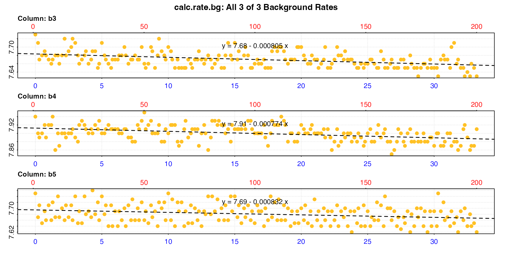
#>
#> # print.calc_rate.bg # ------------------
#> Background rate(s):
#> [1] -0.000805 -0.000774 -0.000832
#> Mean background rate:
#> [1] -0.000804
#> -----------------------------------------Note the default behaviour of calc_rate.bg when no other
inputs are provided is to use all columns, assuming column 1 is
time and all other columns are oxygen
data.
To calculate a mean background rate across different datasets in one
calc_rate.bg command they would have to be in the same data
frame and share the same time column. It is of course possible in R to
put them into this form. Even if they are different lengths, you could
fill empty rows with NA, and this would not affect
calculated rates, as they are derived from linear models which simply
ignore NA values.
However, there are easier approaches to accomplish the same thing. We
have saved two background objects (bg, bg2),
one with two rates, one with three. We could calculate the mean rate
ourselves and enter it as a single adjustment value. We’ll adjust one of
the specimen rates we calculated above.
adj <- mean(
c(-0.000765, -0.000902, -0.000805, -0.000774, -0.000832)
)
adjust_rate(urch1, by = adj, method = "value")
#>
#> # print.adjust_rate # -------------------
#> NOTE: Consider the sign of the adjustment value when adjusting the rate.
#>
#> Adjustment was applied using the 'value' method.
#>
#> Rank 1 of 1 adjusted rate(s):
#> Rate : -0.0278
#> Adjustment : -0.000816
#> Adjusted Rate : -0.027
#>
#> To see full results use summary().
#> -----------------------------------------Or alternatively, enter the five background rates directly as a
numeric vector and let the default method = "mean" be
applied.
adjust_rate(urch1, by = c(-0.000765, -0.000902, -0.000805, -0.000774, -0.000832))
#>
#> # print.adjust_rate # -------------------
#> NOTE: Consider the sign of the adjustment value when adjusting the rate.
#>
#> Adjustment was applied using the 'mean' method.
#>
#> Rank 1 of 1 adjusted rate(s):
#> Rate : -0.0278
#> Adjustment : -0.000816
#> Adjusted Rate : -0.027
#>
#> To see full results use summary().
#> -----------------------------------------Or we could use the object names and extract the
$rate.bg element directly while combining to a vector.
adjust_rate(urch1, by = c(bg$rate.bg,
bg2$rate.bg))
#>
#> # print.adjust_rate # -------------------
#> NOTE: Consider the sign of the adjustment value when adjusting the rate.
#>
#> Adjustment was applied using the 'mean' method.
#>
#> Rank 1 of 1 adjusted rate(s):
#> Rate : -0.0278
#> Adjustment : -0.000816
#> Adjusted Rate : -0.027
#>
#> To see full results use summary().
#> -----------------------------------------The fact that adjust_rate (as well as most
respR functions) accepts numeric values, vectors and other
data structures means there can be many approaches to accomplish the
same result.
“We are running multiple chambers, each with its own paired control chamber.”
Some multiple chamber experiments are set up like this, with each specimen chamber having its own specific control. As seen in the examples above (such as Case 1), these are relatively easy to handle on an individual basis.
However, if you have extracted rates from the chambers and their
controls, these can be used in adjust_rate using
method = "paired" so that each specimen rate is adjusted by
the background rate in the same position.
Again, we’ll use the urchins.rd dataset, and we will
assume that the two background columns (18 & 19) are paired with the
first two specimen columns (2 & 3), that is 2 will be adjusted by
18, and 3 adjusted by 19.
## Calculate both background rates
bg1 <- inspect(urchins.rd, time = 1, oxygen = 18) |>
calc_rate.bg()
bg2 <- inspect(urchins.rd, time = 1, oxygen = 19) |>
calc_rate.bg()
## Calculate both urchin rates
urch1 <- inspect(urchins.rd, time = 1, oxygen = 2) |>
calc_rate(from = 10, to = 40)
urch2 <- inspect(urchins.rd, time = 1, oxygen = 3) |>
calc_rate(from = 10, to = 40)We’ll print the values for a quick look.
urch1$rate
#> [1] -0.0271
urch2$rate
#> [1] -0.0195
bg1$rate.bg
#> [1] -0.000765
bg2$rate.bg
#> [1] -0.000902For the "paired" method, it is generally easiest to
enter the rates as numerics. Here we can extract them directly from the
objects using $ and combine them to a vector using
c().
urch_adj <- adjust_rate(c(urch1$rate, urch2$rate),
by = c(bg1$rate.bg, bg2$rate.bg),
method = "paired")
summary(urch_adj)
#>
#> # summary.adjust_rate # -----------------
#>
#> Adjustment was applied using 'paired' method.
#> Summary of all rate results:
#>
#> rank rate adjustment rate.adjusted
#> 1: 1 -0.0271 -0.000765 -0.0264
#> 2: 2 -0.0195 -0.000902 -0.0186
#> -----------------------------------------We can see each specimen rate has been adjusted by the background
rate at the same position in by.
calc_rate.bg object input
The "paired" method will however also work with a
calc_rate.bg object, as long as it contains the correct
number of rates. We can repeat the above example but use
calc_rate.bg to extract the rates from both background
columns.
## Calculate both background rates
bg <- inspect(urchins.rd, time = 1, oxygen = 18:19) |>
calc_rate.bg()
## Adjust specimen rates (as calculated above)
urch_adj <- adjust_rate(c(urch1$rate, urch2$rate),
by = bg, # bg object instead of values
method = "paired")
summary(urch_adj)
#>
#> # summary.adjust_rate # -----------------
#>
#> Adjustment was applied using 'paired' method.
#> Summary of all rate results:
#>
#> rank rate adjustment rate.adjusted
#> 1: 1 -0.0271 -0.000765 -0.0264
#> 2: 2 -0.0195 -0.000902 -0.0186
#> -----------------------------------------We can see this is the same result as above.
Note, this works for calc_rate.bg because it was
designed to extract single rates from multiple oxygen columns. It won’t
for calc_rate because it was designed to extract multiple
(i.e. 1 or more) rates from a single oxygen column. See next example
however.
calc_rate object input
The "paired" method will work with a single
calc_rate (or auto_rate) output object
containing multiple rates, as long as the by input contains
the same number of rates. Use cases for this are quite narrow, but it
could be used to extract rates from the same regions of specimen and
background experiments, so that rates are adjusted using a background
from the same time in the experiment. This particular use case is
covered under the "concurrent" method in the next section, but this example shows it does work
as expected.
We’ll use urchins.rd column 2 and its paired background
column 18 to extract three rates from different, though overlapping,
twenty minute regions.
## Set from and to times
from <- c(0, 10, 20)
to <- c(20, 30, 40)
## Extract three background rates
bg1 <- subset_data(urchins.rd, from = from[1], to = to[1]) |>
inspect(time = 1, oxygen = 18) |>
calc_rate.bg()
bg2 <- subset_data(urchins.rd, from = from[2], to = to[2]) |>
inspect(time = 1, oxygen = 18) |>
calc_rate.bg()
bg3 <- subset_data(urchins.rd, from = from[3], to = to[3]) |>
inspect(time = 1, oxygen = 18) |>
calc_rate.bg()
# Calculate specimen rates
urch <- inspect(urchins.rd, time = 1, oxygen = 2) |>
calc_rate(from = from, to = to)Now we have three background rates, and three specimen rates all from the same respective regions. We’ll print for a quick look.
bg1$summary
#> rep rank intercept_b0 slope_b1 rsq row endrow time endtime oxy endoxy rate.bg
#> 1: NA 1 7.9 -0.00031 0.0108 1 121 0 20 7.9 7.89 -0.00031
bg2$summary
#> rep rank intercept_b0 slope_b1 rsq row endrow time endtime oxy endoxy rate.bg
#> 1: NA 1 7.91 -0.000912 0.0817 1 121 10 30 7.9 7.84 -0.000912
bg3$summary
#> rep rank intercept_b0 slope_b1 rsq row endrow time endtime oxy endoxy rate.bg
#> 1: NA 1 7.92 -0.00117 0.139 1 121 20 40 7.89 7.89 -0.00117
summary(urch)
#>
#> # summary.calc_rate # -------------------
#> Summary of all rate results:
#>
#> rep rank intercept_b0 slope_b1 rsq row endrow time endtime oxy endoxy rate.2pt rate
#> 1: NA 1 7.85 -0.0303 0.988 1 121 0 20 7.86 7.31 -0.0275 -0.0303
#> 2: NA 2 7.83 -0.0286 0.987 61 181 10 30 7.58 7.00 -0.0290 -0.0286
#> 3: NA 3 7.76 -0.0257 0.984 121 241 20 40 7.31 6.72 -0.0295 -0.0257
#> -----------------------------------------Note how the background rates vary quite a lot. This is because they have been determined over short timescales, and is a good example of why background experiments should be conducted over durations long enough to provide good estimations of the rate of oxygen decline or increase. This is because the signal to noise ratio of shallow background oxygen use or production is often low, so slopes fit over short timescales will have a lot of residual variation, and be inherently less accurate. However, for the purposes of this example we’ll proceed and use them to adjust the specimen rates.
Here, we adjust the calc_rate object which contains
three rates with a vector of the background rates.
urch_adj <- adjust_rate(urch,
by = c(bg1$rate.bg, bg2$rate.bg, bg3$rate.bg),
method = "paired")
summary(urch_adj)
#>
#> # summary.adjust_rate # -----------------
#>
#> Adjustment was applied using 'paired' method.
#> Summary of all rate results:
#>
#> rep rank intercept_b0 slope_b1 rsq row endrow time endtime oxy endoxy rate.2pt rate adjustment rate.adjusted
#> 1: NA 1 7.85 -0.0303 0.988 1 121 0 20 7.86 7.31 -0.0275 -0.0303 -0.000310 -0.0300
#> 2: NA 2 7.83 -0.0286 0.987 61 181 10 30 7.58 7.00 -0.0290 -0.0286 -0.000912 -0.0277
#> 3: NA 3 7.76 -0.0257 0.984 121 241 20 40 7.31 6.72 -0.0295 -0.0257 -0.001168 -0.0246
#> -----------------------------------------Again each specimen rate has been adjusted by the background rate at the same position.
“Our background rate may increase, decrease or fluctuate. We want to adjust the specimen rate by the background rate determined over the exact same time period in a concurrently run blank chamber.”
This is very similar to the last example in the previous section. In
fact, this is exactly the same concept, but the
"concurrent" method allows the appropriate background rate
to be automatically extracted from the same time window in the
background data as the rate to be adjusted.
This is for experiments where one or more controls have been run
concurrently alongside specimen chambers. Therefore the data must either
be contained in the same dataset (e.g. as in urchins.rd),
or if in a separate dataset must share broadly the same time data, or at
least have an equivalent starting time, as well as the same units of
time and oxygen.
If background and specimen datasets are separate they do not need to be exactly the same length. There is some leeway to this built in; if they differ in length by more than 5% or some time values are not shared between the two datasets, a warning is given, but the adjustment is nevertheless performed using the available data, by using the closest matching time window in the background data.
To repeat the note from the example above, estimating background rates over the short durations specimen rates are often determined over may not always be appropriate or accurate. This is because the signal to noise ratio of shallow background oxygen use or production is often low, so slopes fit over short timescales will have a lot of residual variation, and be inherently less accurate. Background rates should be calculated over durations long enough to provide good estimations of the true rate of oxygen decline or increase. If background data are noisy or trends are unclear, dynamic adjustments may be a more appropriate way to get background rate estimations and will work with any two reliable sections of data of any length. See later sections.
This method will not accept numeric inputs. The
"concurrent" method is fairly straightforward. Given a
calc_rate, calc_rate.int,
auto_rate, or auto_rate.int object as input,
for each rate contained in it, adjust_rate uses the
regression parameters from the $summary table to fit a
regression over the same region in the background data entered as the
by input, the slope of which is the background rate. The
by input can be a data.frame,
inspect, calc_rate.bg, or
calc_rate object. If one of the latter three, the function
uses only the $dataframe element. If there is more than one
column of oxygen in the background data, the function calculates the
background rate across the same region in all columns, and the
mean of these are applied as the adjustment. Therefore, concurrent rates
from single or multiple controls can be used to adjust specimen
rates.
This example (using the initial part of the squid.rd
data) is a closed chamber respirometry experiment on a squid.
sqd_insp <- inspect(sqd)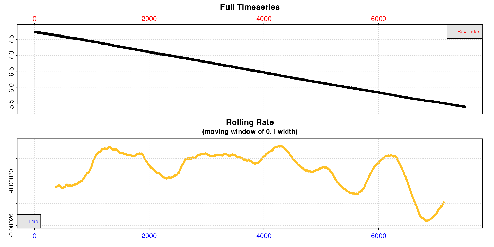
The background data is in a separate data frame, sqd_bg.
There is no need to calculate a rate; adjust_rate will do
this when it identifies the relevant data regions (although it will
accept calc_rate.bg objects). We could also use a data
frame as the by input. The only requirement is that the
time is in column 1 and all other columns are the oxygen columns you
want to use to calculate the concurrent background rate. However it’s
always a good idea to inspect the data for issues and visualise it using
inspect, and this function also allows us to extract the
columns we are interested in.
sqd_bg_insp <- inspect(sqd_bg, time = 1, oxygen = 2)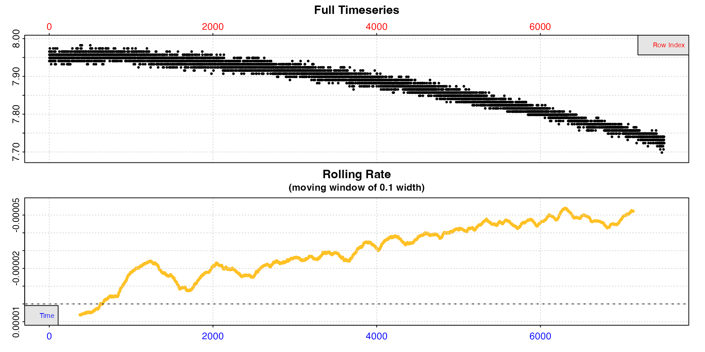
The rolling rate plot makes clear that the background rate increases over the duration of the experiment. Estimating the background rate using the whole dataset would therefore likely lead to a wrong estimation, depending on the time the specimen rate is extracted from. More localised estimations would therefore be more representative.
We’ll use auto_rate on the squid data.
sqd_ar <- auto_rate(sqd_insp)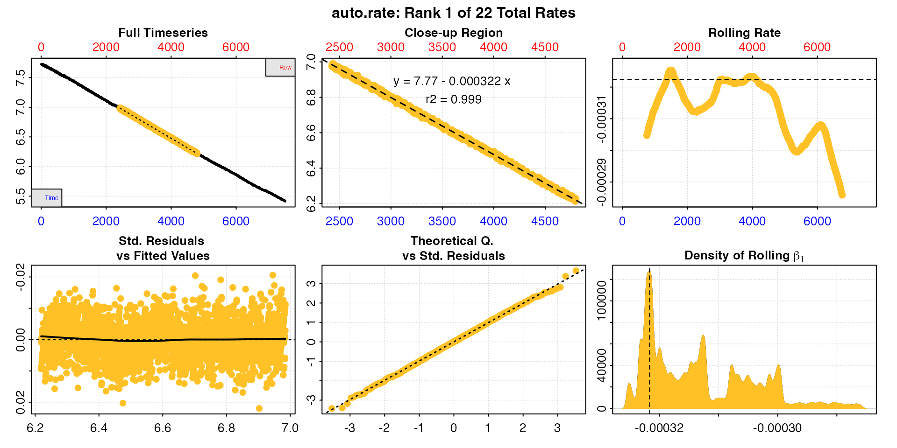
There are 22 linear regions found in these data, so we have 22 rates to be adjusted.
All we need to do is enter the background inspect object
as the by input and specify the method.
sqd_ar_adj <- adjust_rate(sqd_ar, by = sqd_bg_insp, method = "concurrent")We’ll look at the top 5 rows of the summary table.
summary(sqd_ar_adj, pos = 1:5)
#>
#> # summary.adjust_rate # -----------------
#>
#> Adjustment was applied using 'concurrent' method.
#> Summary of rate results from entered 'pos' rank(s):
#>
#> rep rank intercept_b0 slope_b1 rsq density row endrow time endtime oxy endoxy rate adjustment rate.adjusted
#> 1: NA 1 7.77 -0.000322 0.999 128161 2425 4800 2424 4799 6.97 6.23 -0.000322 -0.0000296 -0.000293
#> 2: NA 2 7.75 -0.000316 0.999 68103 274 3058 273 3057 7.67 6.80 -0.000316 -0.0000156 -0.000300
#> 3: NA 3 7.76 -0.000322 0.998 64343 3111 4466 3110 4465 6.76 6.33 -0.000322 -0.0000310 -0.000291
#> 4: NA 4 7.77 -0.000322 0.999 56371 2424 4810 2423 4809 6.97 6.21 -0.000322 -0.0000296 -0.000293
#> 5: NA 5 7.74 -0.000312 0.998 43275 1556 3060 1555 3059 7.26 6.78 -0.000312 -0.0000189 -0.000293
#> -----------------------------------------Note how the adjustment value differs. The top two adjustments are a good example of what we would expect concurrently calculated background rates to be, given what we saw when we inspected the background data, and that the background rate increases with time. The second row adjustment, which comes from the start of the dataset, is much lower than the first row adjustment, which comes from around the middle of the dataset.
We can use calc_rate.bg and the row numbers from the
summary to show that the adjustments for these have been calculated
correctly.
subset_data(sqd_bg, from = 2425, to = 4800, by = "row") |>
calc_rate.bg()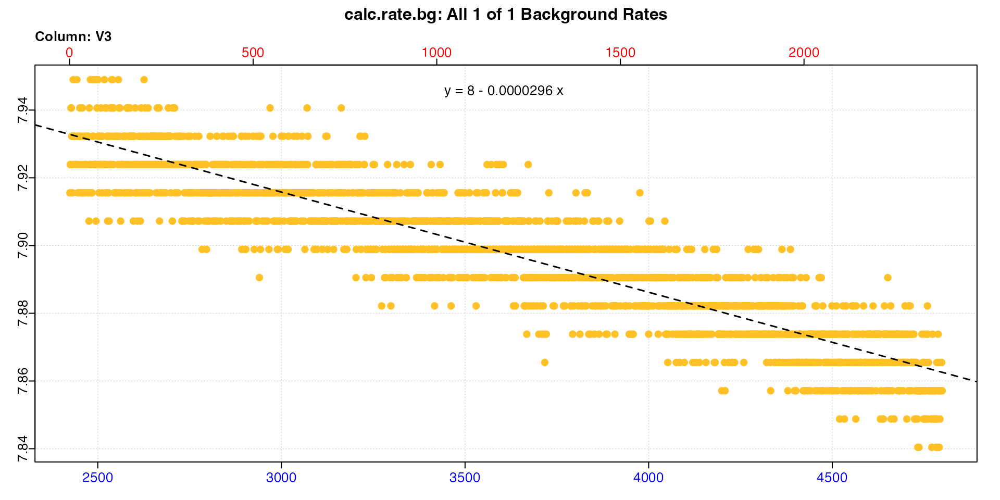
subset_data(sqd_bg, from = 273, to = 3057, by = "row") |>
calc_rate.bg()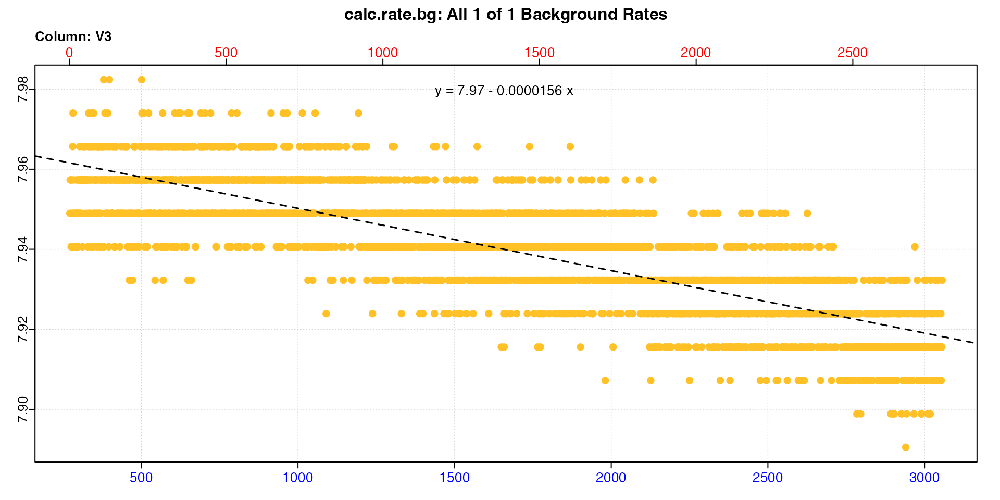
We can see the slopes in the equations are identical to the adjustment values in the summary.
The "concurrent" method is ideal for this type of
dynamic adjustment, however requires a complete concurrent recording of
a control experiment. See linear and exponential dynamic adjustment sections for
examples of applying dynamic adjustments when a complete control
recording is not available.
In this example, a concurrent control has been run alongside an intermittent-flow experiment, and been flushed at the same time as the specimen chamber. In this plot the specimen data is in black, the control in orange.
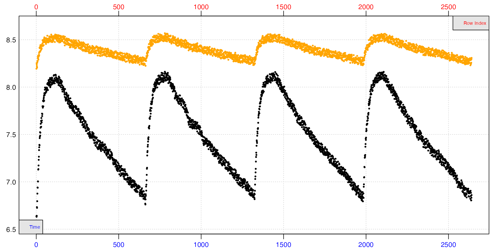
Clearly, fitting slopes to any part of the background data other than within each replicate will lead to questionable results. Since we will be calculating a specimen rate within each replicate, the concurrent method can also use these locations to calculate a background rate.
The replicates follow a specific cycle of 9 minutes closed, two
minutes flushing. Knowing this, we can use calc_rate.int to
extract a rate from the same time window within each using the
wait and measure inputs. We use a
wait of five minutes (300 rows) at the start of each, which
excludes the flush and start of the replicate data. We then use a
measure phase of six minutes (360 rows) to extract a rate
from the rest of the replicate.
# replicate start times - seq(from, to, by)
# starts <- seq(120, 2100, 660)
# # three minute buffer of data to exclude at the start of each replicate
# buffer <- 180
# # period to measure after buffer
# measure <- 360
rates <- calc_rate.int(interm_insp,
starts = 660,
wait = 180,
measure = 420,
by = "row")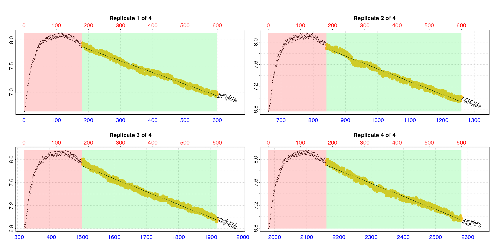
summary(rates)
#>
#> # summary.calc_rate.int # ---------------
#> Summary of all replicate results:
#>
#> rep rank intercept_b0 slope_b1 rsq row endrow time endtime oxy endoxy rate.2pt rate
#> 1: 1 1 8.27 -0.00223 0.983 181 600 181 600 7.88 6.96 -0.00221 -0.00223
#> 2: 2 1 9.80 -0.00228 0.979 841 1260 841 1260 7.89 7.02 -0.00208 -0.00228
#> 3: 3 1 11.25 -0.00224 0.981 1501 1920 1501 1920 8.00 6.96 -0.00248 -0.00224
#> 4: 4 1 12.81 -0.00227 0.979 2161 2580 2161 2580 7.91 6.97 -0.00225 -0.00227
#> -----------------------------------------Now we have a rate from each replicate, we can adjust them using the
"concurrent" method, and the background dataset.
adj <- adjust_rate(rates,
interm_bg,
"concurrent")
summary(adj)
#>
#> # summary.adjust_rate # -----------------
#>
#> Adjustment was applied using 'concurrent' method.
#> Summary of all rate results:
#>
#> rep rank intercept_b0 slope_b1 rsq row endrow time endtime oxy endoxy rate.2pt rate adjustment rate.adjusted
#> 1: 1 1 8.27 -0.00223 0.983 181 600 181 600 7.88 6.96 -0.00221 -0.00223 -0.000466 -0.00177
#> 2: 2 1 9.80 -0.00228 0.979 841 1260 841 1260 7.89 7.02 -0.00208 -0.00228 -0.000453 -0.00182
#> 3: 3 1 11.25 -0.00224 0.981 1501 1920 1501 1920 8.00 6.96 -0.00248 -0.00224 -0.000447 -0.00180
#> 4: 4 1 12.81 -0.00227 0.979 2161 2580 2161 2580 7.91 6.97 -0.00225 -0.00227 -0.000460 -0.00181
#> -----------------------------------------A background adjustment has been calculated from the same time window in the background data for each replicate. We can see they are very consistent, as are the adjusted specimen rates, so all looks good.
If you want to check the adjustment is correct, and that the times
used match those of each rate, these are found in the
$adjustment_model element of the output object.
Much as in how a mean background rate from multiple controls can be used to adjust one or more specimen rates (see here), rates can be extracted from the same time window of multiple concurrent controls to determine a mean background rate.
The urchins.rd data contains two columns of background
data in columns 18 and 19. We’ll calculate a specimen rate from a
specific time window, and use the two background columns to get a mean
background rate from the same window.
# Calculate specimen rate between 10 and 30 mins
rate <- inspect(urchins.rd, 1, 2) |>
calc_rate(from = 10,
to = 30,
by = "time")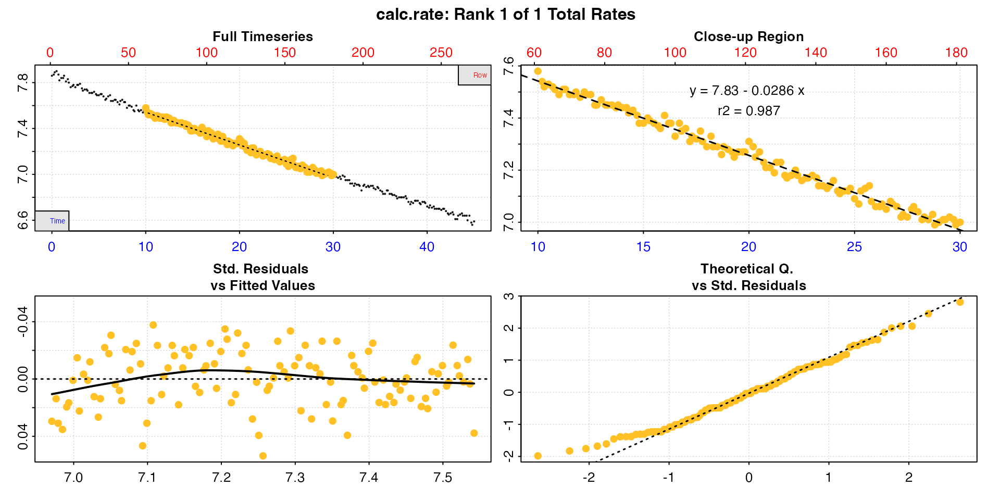
## Inspect background columns
bg_data <- inspect(urchins.rd,
time = 1,
oxygen = 18:19)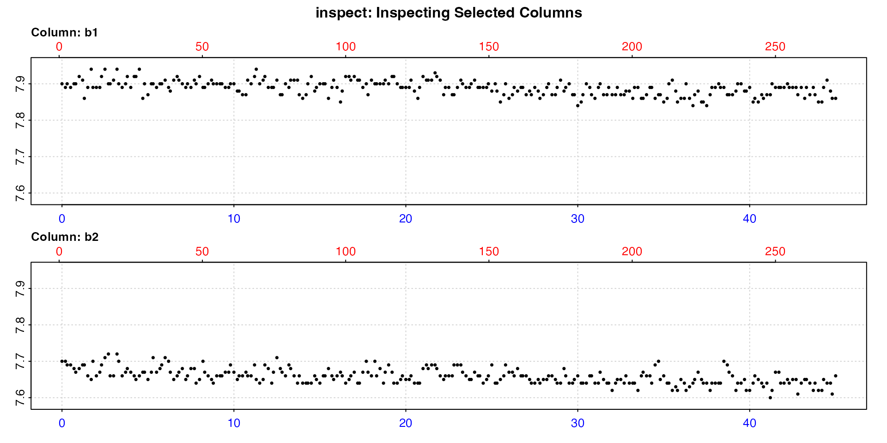
rate_adj <- adjust_rate(rate,
by = bg_data,
method = "concurrent")
print(rate_adj)
#>
#> # print.adjust_rate # -------------------
#> NOTE: Consider the sign of the adjustment value when adjusting the rate.
#>
#> Adjustment was applied using the 'concurrent' method.
#>
#> Rank 1 of 1 adjusted rate(s):
#> Rate : -0.0286
#> Adjustment : -0.00065
#> Adjusted Rate : -0.0279
#>
#> To see full results use summary().
#> -----------------------------------------The adjustment value here is the mean of the two background rates from the same time window of the background columns that the specimen rate was determined from. We show this is the case in the next section.
This performs the same adjustment using a different approach, and
again demonstrates that the "concurrent" method results are
as expected.
# Subset background data between same timepoints
bg_rate <- inspect(urchins.rd, 1, 18:19) |>
subset_data(from = 10, to = 30, by = "time") |>
calc_rate.bg() #>
#> # print.calc_rate.bg # ------------------
#> Background rate(s):
#> [1] -0.000912 -0.000388
#> Mean background rate:
#> [1] -0.00065
#> -----------------------------------------
rate_adj <- adjust_rate(rate,
by = bg_rate,
method = "mean")
print(rate_adj)
#>
#> # print.adjust_rate # -------------------
#> NOTE: Consider the sign of the adjustment value when adjusting the rate.
#>
#> Adjustment was applied using the 'mean' method.
#>
#> Rank 1 of 1 adjusted rate(s):
#> Rate : -0.0286
#> Adjustment : -0.00065
#> Adjusted Rate : -0.0279
#>
#> To see full results use summary().
#> -----------------------------------------We can see this is the same result as the example above using the
"concurrent" method. This is a good example of how the
functions in respR are designed to be flexible and
adaptable, and how the same result can be achieved using different
approaches.
“We have background recordings from directly before and after the experiment and want to apply adjustments assuming the change in background rate over the experiment was linear”
This is common in intermittent-flow respirometry where experiments are run for long durations, often in relatively high temperatures, and so the background rate may increase over the course of the experiment. It is not always practical to run a concurrent empty control in these experiments, so often the equipment is run empty for a period before the specimen is inserted, and again afterwards after it has been removed to provide pre- and post-experiment controls. The typical practice is to assume any change in background rate between these two timepoints is linear, that is any increase in background rate over time is monotonic. Therefore, each specimen rate is adjusted by a different value calculated using its timepoint within the experiment. We would always however recommend at least one completely empty control be run to validate that a linear relationship in background rate is indeed the case (and see next section - exponential adjustments).
This method can also however be used in experiments in which a
concurrent blank experiment is conducted alongside specimen experiments
(as described in the concurrent
section above), but in which the background data is deemed too noisy to
fit reliable regressions over the short timescales that specimen rates
are determined. In this case, any two reliable segments of the
background data of any duration can be used to determine how the
background rate changes over the course of the experiment, and then this
used to adjust specimen rates using the "linear" or
"exponential" methods.
adjust_rate has additional inputs that we have not yet
used that only apply to the "linear" and
"exponential" methods. The one we’ll use in the first example is by2. The additional
inputs time_x, time_by, and
time_by2 are used for numeric inputs, as shown in the next example.
In the "linear" and "exponential" methods,
the by input is the earlier background rate,
by2 is the later background rate. These should share the
same numeric time units and scale, that is the numeric time values
should represent the time difference between them; see the plots below
in Example 1 of the two background rates and
note the blue time x-axes (note that because the data are subsets of a
larger dataset, the red row axes do not correspond).
The rate to be adjusted should also be on the same time scale. Ideally, as in this example, within the same dataset, but they do not have to be. As long as the numeric time values represent the same relative time scale, they can be separate datasets. In fact, if after several experiments you find the background rate relationship to be highly consistent, the same values could be used to adjust future experiments. Care just needs to be taken to have the experimental data time scale be consistent with the controls. Typically that would mean having a consistent start time, that of the end time value of the first control dataset.
Note that the rates to be adjusted using the "linear"
and "exponential" methods do not necessarily have to be at
intermediate times to the background data. Once adjust_rate
has calculated the formula describing the change in background rate
against time, it can apply this to calculate an adjustment for rates at
any time on the same scale, including before and after the
times of the background rates. This is probably not ideal practice, but
the function does make it possible.
adjust_rate takes the two background rate values in
by and by2 and the midpoint of the time
windows over which they were determined and calculates a linear
relationship of rate against time:
lm(c(rate1, rate2)) ~ c(time1, time2)). For each rate in
x to be adjusted, it extracts the midpoint of the time
window it was calculated over and uses the slope and intercept from the
linear model to calculate an adjustment value.
This explanation also applies to the "exponential"
method, except the adjustment is calculated as an exponential
relationship of the form -
lm(log(c(rate1, rate2)) ~ c(time1, time2)).
The zeb_intermittent.rd dataset is from an experiment on
a zebrafish. It is comprised of over 100 replicates. See
help(zeb_intermittent.rd) for more details. See
vignette("intermittent_long") for a more detailed example
of analysing this experiment, but we will briefly repeat part of it
here. We will extract rates from one replicate in the middle of the
experiment, and using the pre- and post-experiment control sections
adjust it using the "linear" method in
adjust_rate.
In this example the rate and background inputs to adjust_rate will be
respR objects, that is outputs from
calc_rate.bg and auto_rate. In the next example we’ll do the same adjustment using
numeric inputs.
The first replicate up to timepoint 4999 is the pre-experiment background data, and from timepoints 75140 to 79251 the post-experiment background data. We’ll subset both of these and calculate the pre- and post-experiment background rates.
# pre
bg_pre <- subset_data(zeb_intermittent.rd, 1, 4999, "time") |>
inspect() |>
calc_rate.bg()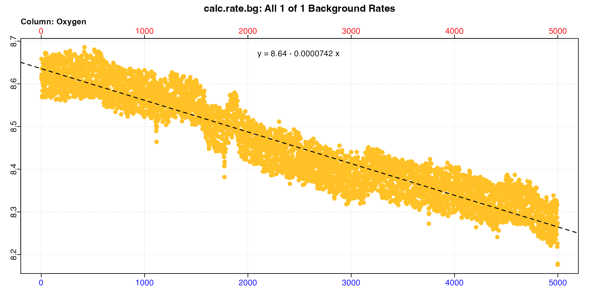
# post
bg_post <- subset_data(zeb_intermittent.rd, 75140, 79251, "time") |>
inspect() |>
calc_rate.bg()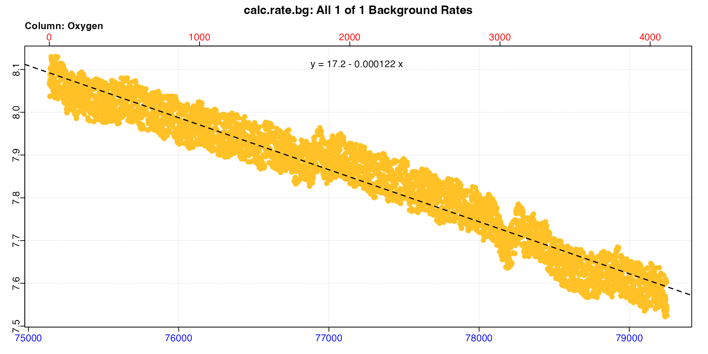
bg_pre
#>
#> # print.calc_rate.bg # ------------------
#> Background rate(s):
#> [1] -0.0000742
#> Mean background rate:
#> [1] -0.0000742
#> -----------------------------------------
bg_post
#>
#> # print.calc_rate.bg # ------------------
#> Background rate(s):
#> [1] -0.0001217
#> Mean background rate:
#> [1] -0.0001217
#> -----------------------------------------We can see the background rate increases by around 70% over the course of the experiment. These objects are saved, so now we’ll calculate the rate from a replicate in the middle of the dataset.
This replicate occurs roughly half way through the experiment. Like above, we’ll subset out the replicate. We’ll also apply a ‘wait’ phase of 2 minutes (120s) from the start that we don’t want to use in the analysis, and a ‘measure’ phase of 7 minutes (420s) to exclude the 2 minutes of flushing at the end.
# define rep start time, buffer and measure periods
start <- 38180 # start time of replicate
wait <- 120 # 2 mins buffer
measure <- 420 # 7 mins measure
rate <- subset_data(zeb_intermittent.rd,
from = start + wait,
to = start + wait + measure,
by = "time") |>
inspect() |>
auto_rate()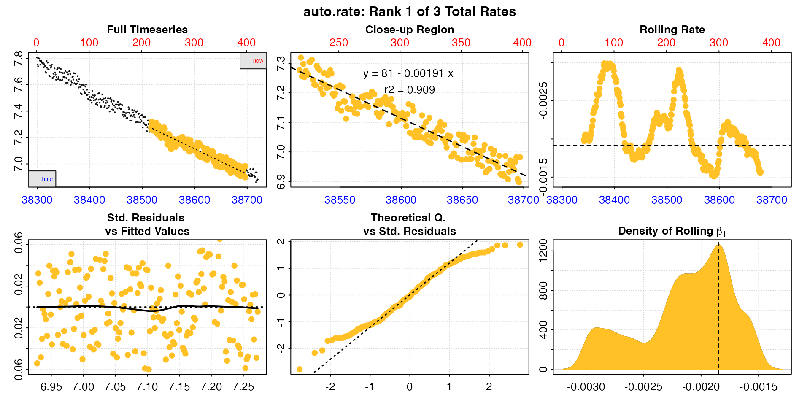
auto_rate has identified three linear regions.
Now we’ll adjust the specimen rates using the two background rates
and the "linear" method.
rate_adj <- adjust_rate(rate,
by = bg_pre,
by2 = bg_post,
method = "linear")
summary(rate_adj)
#>
#> # summary.adjust_rate # -----------------
#>
#> Adjustment was applied using 'linear' method.
#> Summary of all rate results:
#>
#> rep rank intercept_b0 slope_b1 rsq density row endrow time endtime oxy endoxy rate adjustment rate.adjusted
#> 1: NA 1 81.0 -0.00191 0.909 1264 218 398 38517 38697 7.28 6.98 -0.00191 -0.0000971 -0.00182
#> 2: NA 2 90.8 -0.00217 0.978 967 4 375 38303 38674 7.80 6.97 -0.00217 -0.0000971 -0.00207
#> 3: NA 3 119.6 -0.00292 0.823 421 47 132 38346 38431 7.69 7.46 -0.00292 -0.0000970 -0.00282
#> -----------------------------------------Note the adjustment values are very close though not identical in
value, and they are roughly numerically midway between the pre- and
post-experiment background rates of -0.0000742 and
-0.0001217. This is what we would expect for a replicate in
the middle of the dataset if the background rate was increasing linearly
between these two values.
We can show this using the background times and rates by creating our own linear model, and using the coefficients to calculate the rate for a given time, that of the first result in the summary table above.
## background rates and midpoint times
bg1_rt <- bg_pre$rate.bg
bg2_rt <- bg_post$rate.bg
bg1_tm <- (1 + 4999)/2
bg2_tm <- (75140 + 79251)/2
## extract slope and intercept
bg_lm_int <- lm(c(bg1_rt, bg2_rt) ~ c(bg1_tm, bg2_tm))$coefficients[[1]]
bg_lm_slp <- lm(c(bg1_rt, bg2_rt) ~ c(bg1_tm, bg2_tm))$coefficients[[2]]
## midpoint time of the first rate in summary
rate_time <- (rate$summary$time[1] + rate$summary$endtime[1])/2
## Background rate
rate_time * bg_lm_slp + bg_lm_int
#> [1] -0.0000971This is the same as the adjustment value in the summary above.
The exact same adjustment as the above example can be performed by
entering numeric values. Because the x, by,
and by2 are not objects, and therefore do not contain
associated timestamps, these must be entered as time_x,
time_by, and time_by2.
We won’t repeat the whole analysis, only enter the appropriate values
as numerics in adjust_rate to show they output the same
result. Here we enter the rates, and the midpoints of the time
ranges over which they were determined.
rate_adj <- adjust_rate(c(-0.00191, -0.00217, -0.00292),
by = -0.0000742,
by2 = -0.0001217,
time_x = (c(38517, 38303, 38346) + c(38697, 38674, 38431))/2,
time_by = (1 + 4999)/2,
time_by2 = (75140 + 79251)/2,
method = "linear")
summary(rate_adj)
#>
#> # summary.adjust_rate # -----------------
#>
#> Adjustment was applied using 'linear' method.
#> Summary of all rate results:
#>
#> rank rate adjustment rate.adjusted
#> 1: 1 -0.00191 -0.0000972 -0.00181
#> 2: 2 -0.00217 -0.0000971 -0.00207
#> 3: 3 -0.00292 -0.0000970 -0.00282
#> -----------------------------------------We get the same result as above (the small mismatch in the first is simply due to the lower precision of entered values compared to internal ones).
“We have background recordings from directly before and after the experiment and want to apply adjustments assuming the change in background rate over the experiment was exponential”
This is exactly the same as the dynamic linear adjustment above, except the background rate is assumed to increase exponentially. The explanation and background to this is covered above, so please read that first.
An exponential increase in background rate is quite common in experiments done at high temperatures, where the microbial population in a respirometer shows exponential growth and therefore exponential oxygen use. Typically this method would be applied only after this exponential relationship had been established using pilot experiments of empty control experiments of sufficient duration, which is a practice we would strongly recommend.
The background_exp.rd example dataset shows background
data with a rate that increases exponentially.
inspect(background_exp.rd)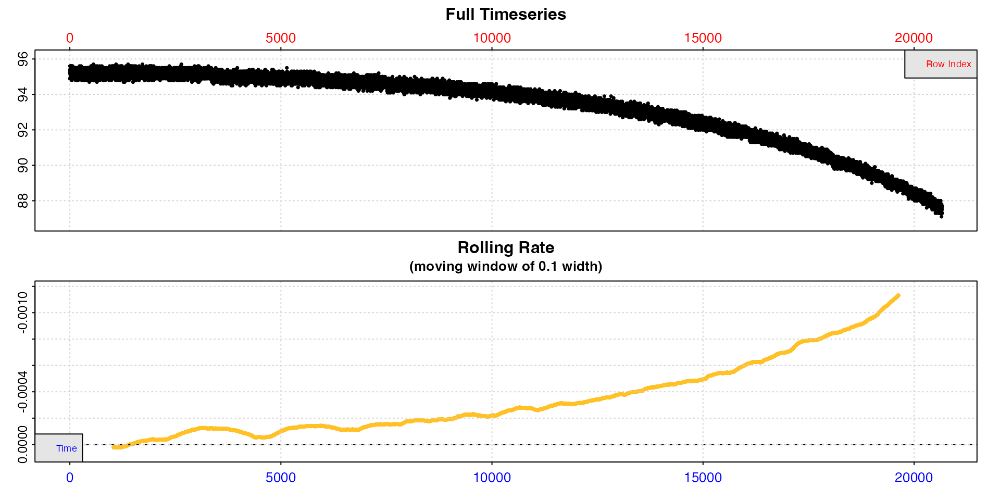
We can see this is exponential from the rolling rate plot: the rate is not constant, because that would be indicated by a horizontal level line. It increases, however this is not a linear increase because it is not increasing monotonically. Instead the increase accelerates with time, that is increases exponentially.
We will use the same example as above, but this time assume an exponential increase in background rate.
rate_adj <- adjust_rate(rate,
by = bg_pre,
by2 = bg_post,
method = "exponential")
summary(rate_adj)
#>
#> # summary.adjust_rate # -----------------
#>
#> Adjustment was applied using 'exponential' method.
#> Summary of all rate results:
#>
#> rep rank intercept_b0 slope_b1 rsq density row endrow time endtime oxy endoxy rate adjustment rate.adjusted
#> 1: NA 1 81.0 -0.00191 0.909 1264 218 398 38517 38697 7.28 6.98 -0.00191 -0.0000942 -0.00182
#> 2: NA 2 90.8 -0.00217 0.978 967 4 375 38303 38674 7.80 6.97 -0.00217 -0.0000941 -0.00207
#> 3: NA 3 119.6 -0.00292 0.823 421 47 132 38346 38431 7.69 7.46 -0.00292 -0.0000941 -0.00282
#> -----------------------------------------Under an exponential vs. a linear background relationship we would expect the background rate to be lower at all stages of an experiment except the very end. Here, as expected we see slightly lower adjustment values than in the linear example above.
In most experiments, the differences to final adjusted rates between applying these two adjustment methods will be minor. The important factor is to run trials to establish what kind of relationship the background rate has over time, and try to minimise background as much as possible.
“We have oxygen production data from a seaweed and want to adjust rates for oxygen consumption by microbial organisms in the respirometer”
All of the above methods of adjustment will also work on oxygen production data. The only thing to be wary of, as noted many times in this vignette, is to be careful regarding the signs of the rates involved. Oxygen consumption or removal rates are negative, oxygen production or input rates positive.
The algae.rd dataset contains a recording from a
respirometry experiment on algae exposed to light, and so producing
oxygen via photosynthesis. We’ll calculate a production rate from these
data.
alg_rt <- calc_rate(algae.rd)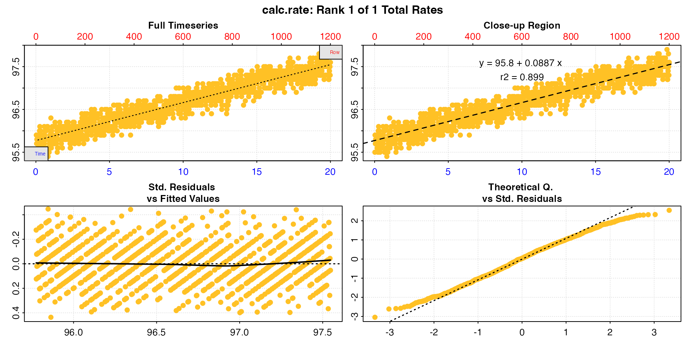
print(alg_rt)
#>
#> # print.calc_rate # ---------------------
#> Rank 1 of 1 rates:
#> Rate: 0.0887
#>
#> To see full results use summary().
#> -----------------------------------------Note how the rate is positive, unlike all the other examples before now.
A blank control experiment has also been conducted over the same time period, so we’ll calculate a background rate.
bg_rt <- calc_rate.bg(alg_bg)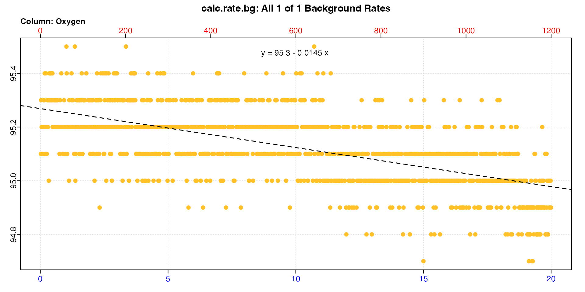
print(bg_rt)
#>
#> # print.calc_rate.bg # ------------------
#> Background rate(s):
#> [1] -0.0145
#> Mean background rate:
#> [1] -0.0145
#> -----------------------------------------Note, this rate is negative. This suggests the production rate of the specimen is being underestimated, because the microbial community in the respirometer is consuming some of the produced oxygen. We can adjust the rate to see.
rt_adj <- adjust_rate(alg_rt, bg_rt)
print(rt_adj)
#>
#> # print.adjust_rate # -------------------
#> NOTE: Consider the sign of the adjustment value when adjusting the rate.
#>
#> Adjustment was applied using the 'mean' method.
#>
#> Rank 1 of 1 adjusted rate(s):
#> Rate : 0.0887
#> Adjustment : -0.0145
#> Adjusted Rate : 0.103
#>
#> To see full results use summary().
#> -----------------------------------------We see this is indeed the case, and the adjusted rate is higher. We can do this same adjustment using numeric values, but we must be careful to use the correct signs.
adjust_rate(0.0887, -0.0145)
#>
#> # print.adjust_rate # -------------------
#> NOTE: Consider the sign of the adjustment value when adjusting the rate.
#>
#> Adjustment was applied using the 'mean' method.
#>
#> Rank 1 of 1 adjusted rate(s):
#> Rate : 0.0887
#> Adjustment : -0.0145
#> Adjusted Rate : 0.103
#>
#> To see full results use summary().
#> -----------------------------------------“Our respirometer is open to the air. We want to correct oxygen uptake rates for oxygen input at the surface”
It is not just the rate to be adjusted that might be positive. There are scenarios and experiments where the background change in oxygen is an input, for example in open tank respirometry where the surface is open to the atmosphere and the input of new oxygen has been quantified or can be reliably estimated, such as by using Fick’s Law (e.g. Leclercq et al. 1999).
adjust_rate can therefore accept positive background
rate values.
adjust_rate(-0.0176, 0.0042)
#>
#> # print.adjust_rate # -------------------
#> NOTE: Consider the sign of the adjustment value when adjusting the rate.
#>
#> Adjustment was applied using the 'mean' method.
#>
#> Rank 1 of 1 adjusted rate(s):
#> Rate : -0.0176
#> Adjustment : 0.0042
#> Adjusted Rate : -0.0218
#>
#> To see full results use summary().
#> -----------------------------------------“We want to manually adjust recorded oxygen values from the specimen by the decrease observed in the control chamber”
There is one other way of using background data to adjust specimen
data, but it is a relatively simple arithmetic operation, and does not
require adjust_rate.
With a specimen chamber and a concurrent blank control, an investigator may opt to calculate the difference in oxygen in the control recordings from a set value, such as the initial oxygen concentration, and then subtract this from the recorded values in the specimen chamber. The rationale behind this is that any difference in oxygen in the control from the initial conditions due to background use is also occurring in the specimen chamber, so it is a simple arithmetic operation to subtract this.
Here we’ll demonstrate this returns an equivalent result as the more
typical adjustment methods we show above. We’ll use the
urchins.rd data, specifically the first specimen column
(2) and first background column (18).
We’ll inspect both to see the structure.
inspect(urchins.rd, 1, 2)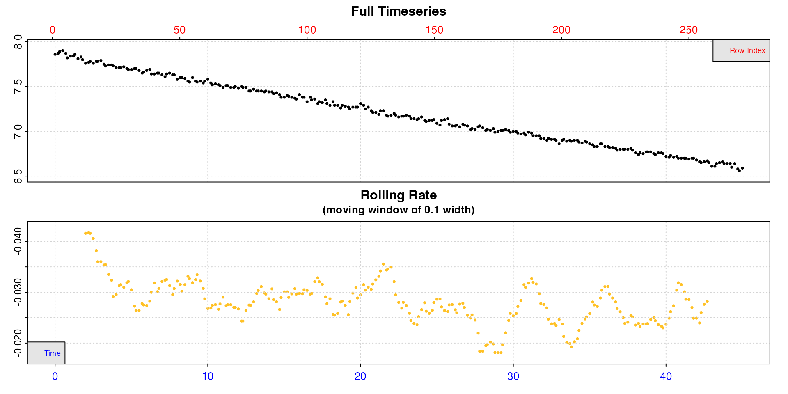
inspect(urchins.rd, 1, 18)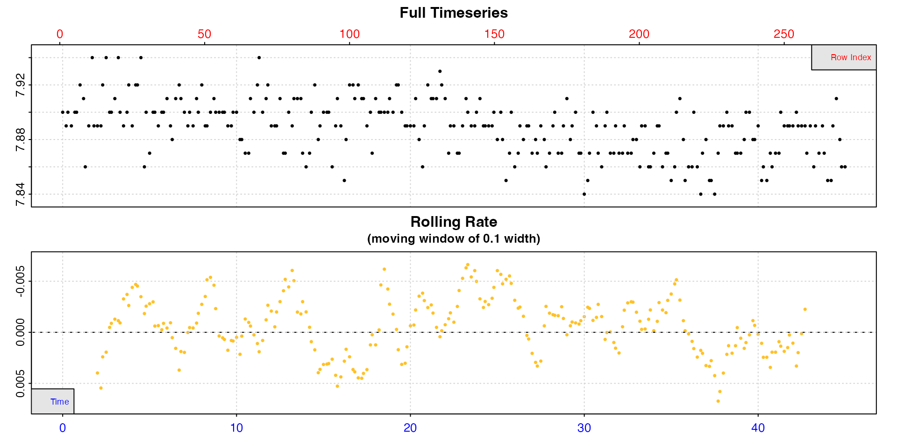
First we’ll calculate the difference for every value in the background oxygen data from the initial value. Then we subtract this from the oxygen values in the specimen data. Finally we’ll calculate a rate from the new data between 10 minutes and 30 minutes.
## background difference in oxygen from initial value
bg_diff <- urchins.rd[[18]] - urchins.rd[[18]][1]
## make new dataframe of specimen data
urch <- urchins.rd[,c(1,2)]
## subtract background difference from specimen oxygen
urch[[2]] <- urch[[2]] - bg_diff
## calculate rate
urch_rt <- calc_rate(urch, 10, 30)#>
#> # print.calc_rate # ---------------------
#> Rank 1 of 1 rates:
#> Rate: -0.0277
#>
#> To see full results use summary().
#> -----------------------------------------Now we do the adjustment from the same data region using
respR functions.
## calculate urchin rate
urch_rt <- urchins.rd |>
inspect(1, 2) |>
calc_rate(10, 30)
## calculate background rate from same region
bg_rt <- urchins.rd |>
subset_data(10, 30) |>
inspect(1, 18) |>
calc_rate.bg()
## adjust rate
urch_rt_adj <- adjust_rate(urch_rt, bg_rt)#>
#> # print.adjust_rate # -------------------
#> NOTE: Consider the sign of the adjustment value when adjusting the rate.
#>
#> Adjustment was applied using the 'mean' method.
#>
#> Rank 1 of 1 adjusted rate(s):
#> Rate : -0.0286
#> Adjustment : -0.000912
#> Adjusted Rate : -0.0277
#>
#> To see full results use summary().
#> -----------------------------------------We can see the final adjusted rate result is identical. Either of these methods works, and is a valid way of adjusting specimen data for background.
These are general notes and tips about using
adjust_rate.
“We want to only use a part of a background recording to adjust our specimen rate”
You may notice calc_rate.bg does not have region
selection inputs in the way calc_rate does. It calculates
the rate across the whole oxygen~time dataset as entered. This might
cause problems when you don’t want to use all of the background data,
there is a data anomaly at the start or end, or it is only part of a
larger dataset, such as when it has been conducted in the same chamber
as the specimen prior to it being inserted, and so is part of the same
data recording. In general, R makes it easy to subset datasets to
separate objects, however respR has a dedicated function to
do this for respirometry data: subset_data().
Here, we have a background recording, but the chamber was left open until the researcher was ready to start the experiment proper at around timepoint 5000, so the initial stages are not useful.
inspect(bg_data)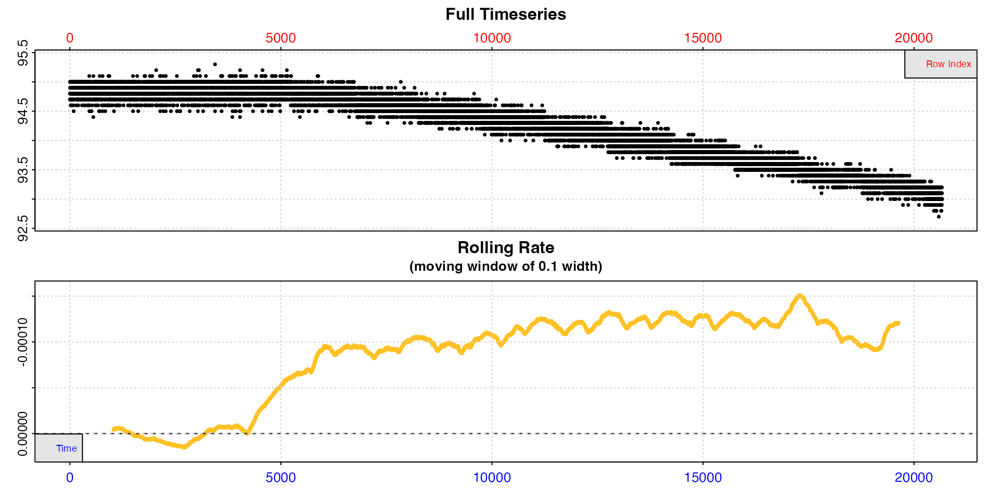
Using this complete dataset would give an incorrect background rate
estimation. Instead we use subset_data to subset only the
data region we are interested in and pass it to
calc_rate.bg. This subsetting can be performed using
"time", "row", or "oxygen"
ranges.
bg <- subset_data(bg_data, from = 5000) |>
calc_rate.bg()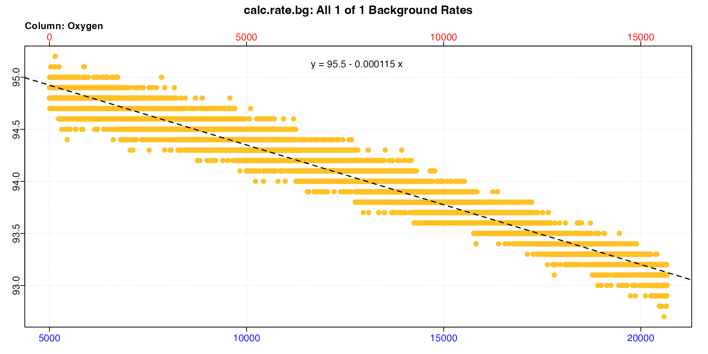
We can use the fact that the default is method = "time"
to subset from timepoint 5000. If we don’t specify a to
input the default behaviour is to subset to the end of the dataset.
Now we can use this background rate to adjust a specimen rate.
sard <- inspect(sardine.rd) |>
calc_rate(from = 2000, to = 4000) |>
adjust_rate(by = bg)
print(sard)
#>
#> # print.adjust_rate # -------------------
#> NOTE: Consider the sign of the adjustment value when adjusting the rate.
#>
#> Adjustment was applied using the 'mean' method.
#>
#> Rank 1 of 1 adjusted rate(s):
#> Rate : -0.000705
#> Adjustment : -0.000115
#> Adjusted Rate : -0.000591
#>
#> To see full results use summary().
#> -----------------------------------------If you just want to extract a single rate, using
calc_rate and its region selection inputs to calculate a
background rate from a specific region is also an option. See here for discussion about the main differences
between calc_rate.bg and calc_rate.
adjust_rate allows you to estimate an appropriate or
maximum length an experiment should be. The higher the background rate,
the more uncertainty is introduced into estimations of the specimen
rate. After quantifying background and its increase over time, we can
estimate how long it will take until it reaches a certain percentage of
the specimen rates.
For example, let’s take the example from above of the linearly increasing background rate of our zebrafish, and decide background rates above 10% of specimen rates are unacceptably high. We can estimate how long it will take for this to occur.
duration <- 70000 # starting duration
under10 <- TRUE # This will hold our logical test result
# Is the background rate under 10% of the specimen rate?
# while it is, repeat, adding 1 hour to duration each time
while (under10) {
rate_adj <-
suppressWarnings(
suppressMessages(
adjust_rate(-0.00191, # typical specimen rate
by = -0.0000742, # initial background rate
by2 = -0.0001217, # end background rate
time_x = duration, # this is what we vary
time_by = (1 + 4999)/2, # initial background time
time_by2 = (75140 + 79251)/2, # end background time
method = "linear")
))
# Is background rate under 10% of specimen rate?
under10 <- rate_adj$adjustment/rate_adj$rate * 100 < 10
# Increase duration by 1 hour
duration <- duration + 3600
# if bg NOT under 10% of specimen rate print the duration in hours
# The while loop will also stop here
if(!under10) print(duration/60/60)
}
#> [1] 53.4Now we can see this level of background rate will be reached in around 53 hours, so our current experiments of 24h are well within this. If we wanted to run them even longer however, this gives us a good idea of the maximum duration before the background rate might interfere with good estimates of specimen rate.
As with most outputs in respR, adjust_rate
objects support the generic S3 functions print,
summary, and mean. These have the additional
inputs pos and export. See help files for
additional information. In the case of mean, if there are
multiple rates they return the mean value of the primary output
$rate.adjusted. This can be output as a value by passing
export = TRUE.